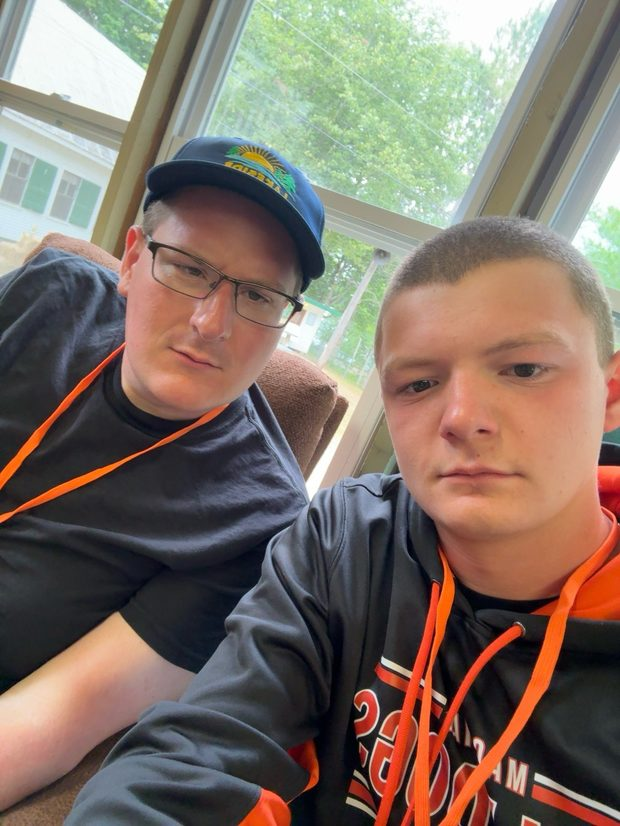

🎙️ Tonight's Program
“Buckle up — we're going nowhere.” Pick your intro; best experienced loud.
An understated late-night title card. Warm light, fine gold type, and quiet motion.
The budget knockoff. Comic Sans. Buffering. Two-and-a-half stars. Ships in 3–6 weeks.
The big TV reveal — count 'em down from 6th, live scores, shields, and emoji confetti cannons.
Late Night
Buckle up — we're going nowhere.
Temu Patrick
buckle up we going NOWHERE 🚗💨
